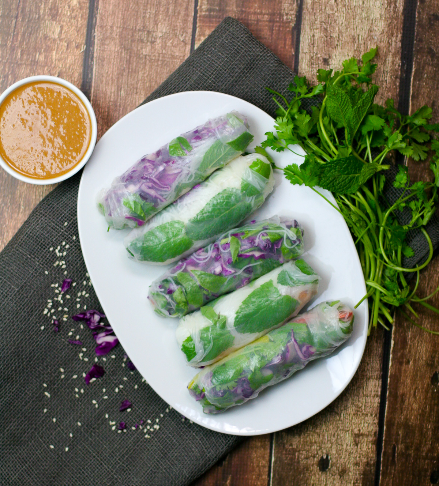
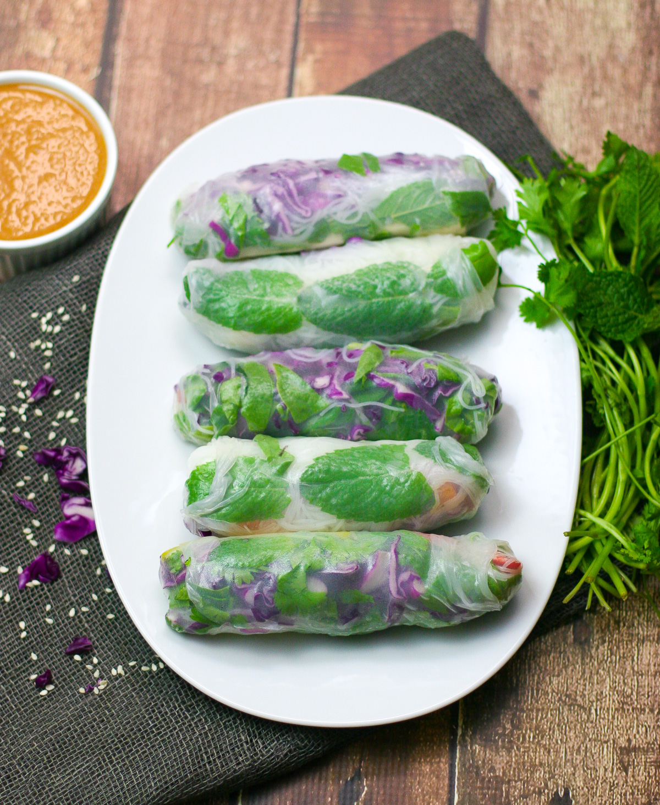

Tofu Fresh Spring Rolls

The Best Tofu Fresh Spring Rolls!
I truly hope you all love these Tofu Fresh Spring Rolls with a Peanut Dipping Sauce! They are super fresh, a fun Summer cooking project, and make the best veggie-filled appetizer!
Ingredients
Salt and Pepper Tofu
- 14 ounces block tofu (cut into 12 long slices)
- 2 tablespoons cornstarch
- 1 teaspoon salt
- 1 teaspoon white pepper
Fresh Roll Ingredients
- 12 rice paper sheets
- 3 ounces dried vermicelli
- 2 cups lettuce
- 1 red pepper (thinly sliced)
- 1 large carrot (thinly sliced or shredded)
- thai basil (2 leaves per roll)
- cilantro (2 sprigs per roll
Peanut Dipping Sauce
- ⅓ cup peanut butter (unsalted and creamy is preferred)
- ⅓ cup water
- 1 tablespoon soy sauce
- 1 tablespoon lime juice
- 2 tablespoons maple syrup
- 1 teaspoon Sriracha (for some heat)
- crushed peanuts (as garnish)
Instructions
Cook the Tofu & Vermicelli Noodles
- First, slice the block of tofu in half and press it between two towels or two paper towels. Let the tofu sit for 10 minutes to soak up any excess moisture.
- While the tofu is being pressed, bring a pot of water to a boil and add in the vermicelli noodles. Cook for 3-5 minutes until tender. Strain, rinse under cold water, and set aside in a small bowl.
- Remove the pressed tofu and slice each half into 6 slices. Then, add to a large bowl and add in the cornstarch, salt, and pepper. Mix together until the tofu is completely coated.
- Add the sesame oil to a cast-iron or non-stick pan and heat. Once the oil is hot, add in the tofu and cook each side for 3-5 minutes until crispy. Once cooked, set the tofu aside in a single layer on a plate.
Making the fresh rolls
- Chop the veggies and prep the herbs and place them in individual bowls. Then, fill a large bowl with lukewarm water to wet the rice paper sheets
- Get a wood board ready and brush water on the surface so it is damp. It is a good idea to dampen the board every 2-3 rolls to keep it moist.
- Dip each sheet of rice paper in the bowl of lukewarm water to moisten the surface for a few seconds. Then, lay the sheet of rice paper onto the wood board. Place a handful of lettuce close to the bottom edge of the rice paper (leaving about 1" from the border) and top it with chopped vegetables, vermicelli noodles, and cilantro.
- Next, arrange one tofu slice about 2 inches above the stacked vegetables on the rice paper and place the Thai basil directly on top.
- Take the lower edge of the rice paper with the toppings and roll it up until you reach the tofu. Then, fold in the left and right sides of the rice paper so it covers the tofu. Continue rolling the spring roll and press together the end to seal.
- Repeat this process with each fresh tofu roll.
Peanut Dipping Sauce
- Once the fresh rolls are done, make the peanut dipping sauce by adding the unsalted peanut butter, water, soy sauce, lime juice, maple syrup, and optional sriracha to a blender or food process. Then, blend until smooth and creamy. Pour into a small serving dish and top with peanuts.

Enjoy!